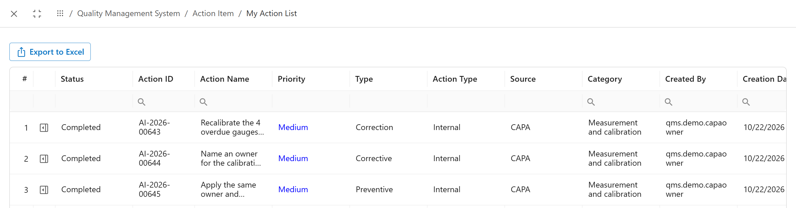
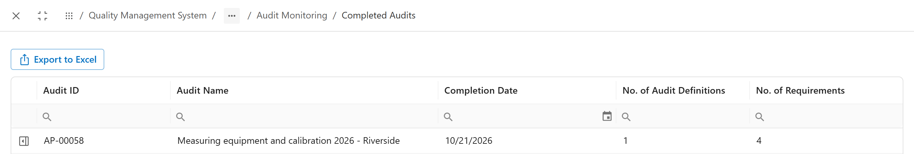
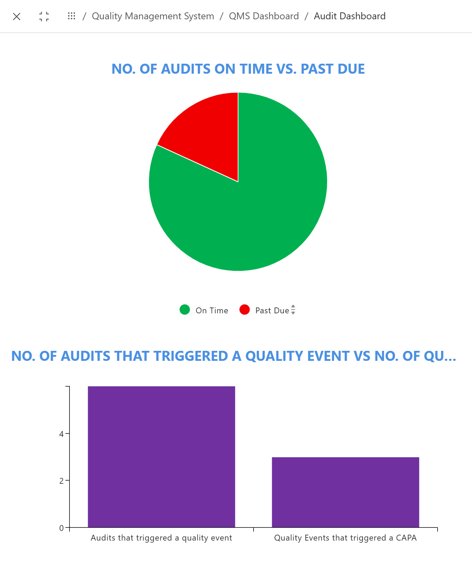

My open work
Jonas wants to see every action he owns in one place, done or not.
Action Item > My Action List shows the action items of the person who opens it.

123- Status: Not Started, Has Started, In Progress, Completed or Rejected.
- Type: correction, corrective, preventive.
- Source: where the action came from, here a CAPA.
Finished audits
Elena checks that this year's calibration audit is closed and that all four requirements were covered.
Internal Audit Program Management > Audit Monitoring > Completed Audits lists every signed-off audit. All Audit List and Active Audits sit next to it.

123- The audit, AP-00058.
- Completion Date.
- No. of Requirements it checked.
Audits at a glance
Before the management review, Elena wants two numbers: how many audits ran late, and how many led to further work.
QMS Dashboard > Audit Dashboard counts every audit in the system, not only one.

12- Audits on time against past due.
- Audits that raised a quality event, against quality events that raised a CAPA.
Actions at a glance
Open actions are where problems get stuck. A pile of overdue corrections means findings are being recorded and not fixed.
QMS Dashboard > Action Items Dashboard shows all action items in the system.
 123
123- On time against past due.
- By status.
- By type: correction, corrective, preventive, improvement and effectiveness check.
Common mistakes
- Reading a dashboard as the state of one audit. The charts count everything in the system.
- Looking only at My Action List. It shows your own actions, not your team's.
- Treating "completed" as "effective". An action can be done and still not fix the problem. The CAPA's effectiveness check answers that.